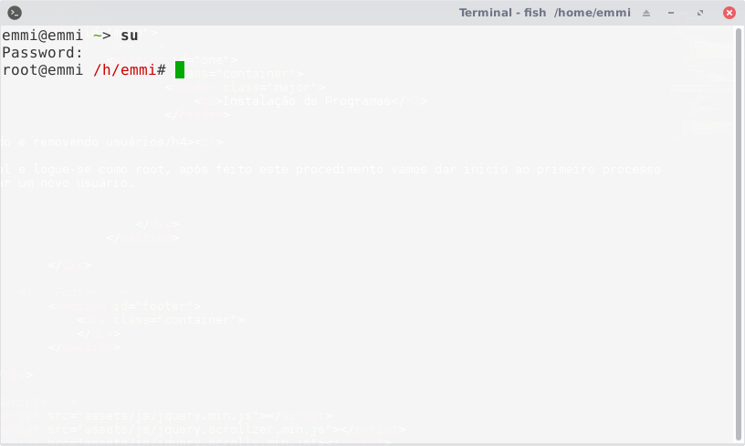
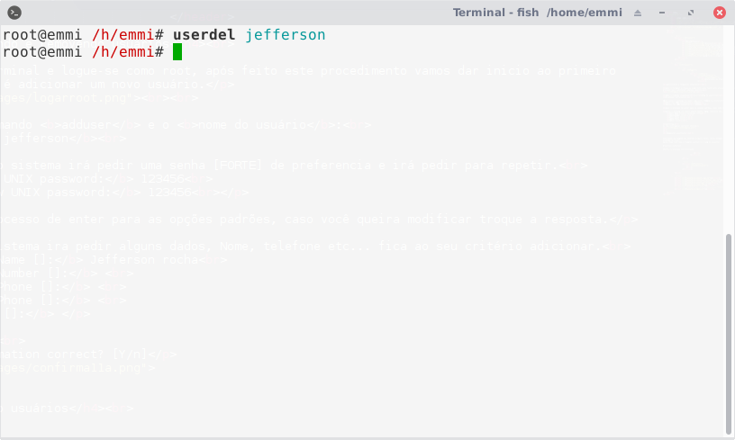

Adicionando e removendo usuários
Abra o terminal e logue-se como root, após feito este procedimento vamos dar inicio ao primeiro processo que é adicionar um novo usuário.
Rode o comando adduser e o nome do usuário:
# adduser jefferson
Neste passo o sistema irá pedir uma senha [FORTE] de preferencia e irá pedir para repetir.
Enter new UNIX password: 123456
Retype new UNIX password: 123456
Após o processo de enter para as opções padrões, caso você queira modificar troque a resposta.
Agora o sistema ira pedir alguns dados, Nome, telefone etc... fica ao seu critério adicionar.
Full Name []: Jefferson rocha
Room Number []:
Work Phone []:
Home Phone []:
Other []:
Confirme.
Is the information correct? [Y/n]
Removendo usuários
O processo de remoção de usuários é muito fácil, neste exemplo vamos remover o usuário "Jefferson" que acabamos de criar. Ainda como root rode o comando userdel e o nome do usuário:
# userdel jeffersonPronto, o processo foi concluido.
